Overview
This document describes how to migrate to the new ProcessMaker Customer Support Portal. ProcessMaker continually strives to improve our customer support experience. In that goal, ProcessMaker has migrated from the Mantis ticketing system to Zendesk to track your ProcessMaker Support tickets.
Log On to the Customer Support Portal
Refer to one of the following sections to log on to the ProcessMaker Customer Support Portal:
Log On Using Credentials from a Mantis or Zendesk Account
Follow these steps to log on to the ProcessMaker Customer Support Portal using credentials from either an existing Mantis account or one which ProcessMaker Support has created for you to access the ProcessMaker Customer Support Portal:
-
Go to the following URL: https://support.processmaker.com. The Sign in to ProcessMaker Customer Support page displays.
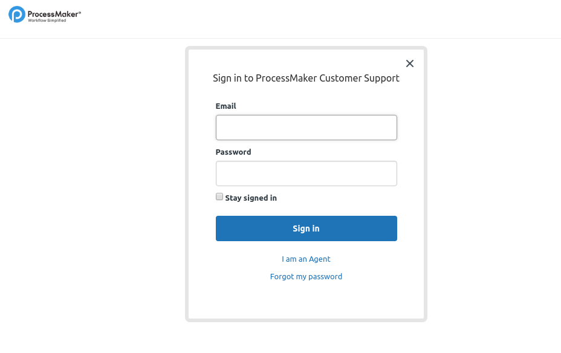
In the Email field, enter the email address for your account. If you have an existing Mantis account, use the email address associated with that account.
In the Password field, enter the password that has to be emailed to you that has the subject “Welcome to ProcessMaker Customer Support.” If you did not receive an email, see Forgot My Password or Do Not have a Password.
Click Sign in.
Note: If you have a Mantis account but do not know which email address is associated with your account, please contact us at support@processmaker.com.
Forgot My Password or Do Not have a Password
Follow these steps if you forgot your password or you do not have a password but have an existing Mantis account:
Go to the following URL: https://support.processmaker.com. The Sign in to ProcessMaker Customer Support page displays.
-
Click the Forgot a password link located at the bottom of the log on page to resend the email. The Please set me up with a new password screen displays.

In the Email field, enter your email address, and then click Submit.
-
The Check your email screen displays. Click Close.
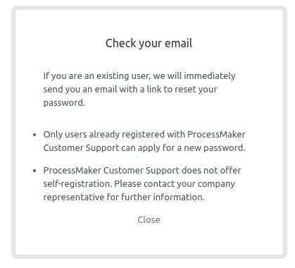
-
Look for an email that confirms you want to reset your password and contains instructions to do so. The email’s subject is ProcessMaker Customer Support password reset.
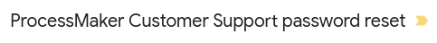

-
Click the link in the confirmation email. The Change password screen displays.

In the New password field, enter your new password that complies with password requirements, and then click Change password.
Log on to the ProcessMaker Customer Support Portal using your new password. See Log On Using Credentials from an Existing Mantis Account.
Request a Zendesk Account
If you need to request a second Zendesk account for another person in your organization. Follow these steps to do so:
An existing Zendesk user who has a ProcessMaker Customer Support Portal account must open a new ticket to request your access. See Open a ProcessMaker Support Ticket.
In the Summary field of the new ticket, your team member specifies which ProcessMaker project to associate with the new account. Example: “New Account in {project name}”.
In the Description field of the new ticket, your team member enters the following information about the new account: “Account request for {Full Name} with {email address}”.
After you receive ProcessMaker Support’s confirmation in the ticket, your Zendesk account to log on to the ProcessMaker Customer Support Portal is created. To log on, see Log On Using Credentials from a Mantis or Zendesk Account.
Locate Your ProcessMaker Support Tickets
Follow these steps to locate your ProcessMaker Support tickets:
-
Log on to the ProcessMaker Customer Support Portal. The main page displays.
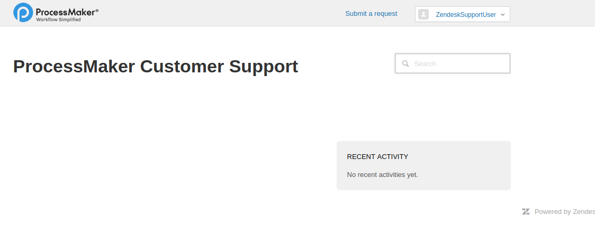
-
Click the drop-down menu from your ProcessMaker Customer Support Portal username, and then select My activities.

The My activities page displays.
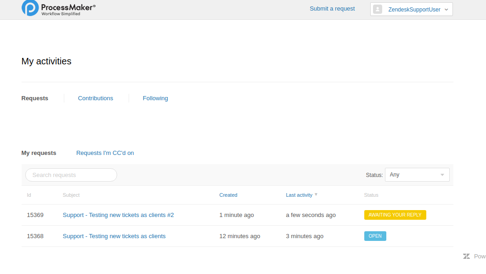
-
From the My activities page, view all the ProcessMaker Support tickets you have reported and the status of each.

Below is a description of each status and how each corresponds with the old Mantis ticketing system:
-
Open: The Open status represents an “acknowledge” status. In Mantis, this status was represented as an orange color, which means that the ProcessMaker Support agent is working on this ticket. In Zendesk, this status is represented as a light blue color.
The Open status also corresponds to the On-Hold status used in Mantis, and was represented as a yellow color. This status means that the ProcessMaker Support agent has engaged the ticket with other resources in ProcessMaker.
Awaiting Your Reply: The Awaiting Your Reply status represents a “feedback” status. In Mantis, this status was represented as a purple color, which means that the ProcessMaker Support agent is waiting for your feedback. In Zendesk, this status is represented as a yellow color.
Solved: The Solved status represents the “resolved” status. In Mantis, this status was represented as a green color, which means that the ProcessMaker Support agent solved the ticket. In Zendesk, this status is represented as a gray color.
Closed: The Closed status does not display because it is an automatic status set by Zendesk in solved tickets after a period of time.
-
Open a ProcessMaker Support Ticket
Follow these steps to open a ProcessMaker Support ticket:
Log on to the ProcessMaker Customer Support Portal.
-
To the left of your ProcessMaker Customer Support Portal username, click the Submit a request link.

The Submit a request form displays.
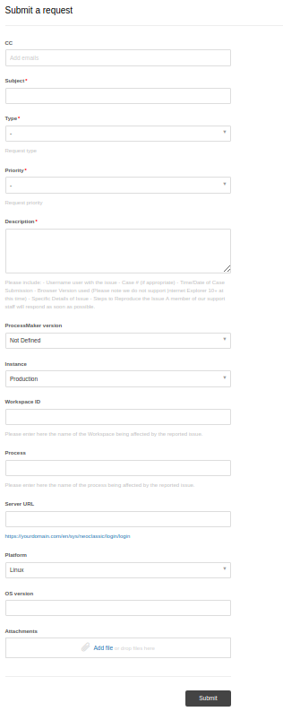
-
Enter the following information into the Submit a request form:
CC (Optional): Enter the email addresses of the persons that you consider should be aware of the ticket (the emails should be part of the project). Consider that it is not necessary to reply to the email that these persons receive, it is only an informative email.
Subject (Required): Enter a summary of the issue.
-
Type (Required): From this drop-down menu, select one of the following types according to your requirement:
Question
Incident
Problem
Task
-
Priority (Required): From this drop-down menu, select one of the following priority levels ProcessMaker Support should address this issue:
Low
Normal
High
Urgent
-
Description (Required): Describe the issue. Please include the following information:
Username of the user affected by the issue
Case # (if appropriate)
Time/Date of Case Submission
Browser Version used
Specific Details of Issue
Steps to Reproduce the Issue
Enter a detailed description of the issue.
If applicable, describe the error that occurs and/or how ProcessMaker operates differently than you expect.
-
Severity (Required): From this drop-down menu, select one of the following severity levels:
Feature: Use to propose a new feature or enhancement to an existing function.
Trivial: Use to report a trivial issue. Trivial issues do not impede product functionality.
Text: Use to report a text issue, such as a typographical error in a field label.
Tweak: Use to report a tweak to a feature. Tweaks are less severe than minor issues.
Minor: Use to report a minor issue. Minor issues are less severe than major issues.
Major: Use to report a major issue. Major issues cause an impediment from properly using a feature.
Crash: Use to report a crash issue. Crash issues cause ProcessMaker to stop functioning.
Block: Use to report a block issue. Block issues cause ProcessMaker to stop functioning and may cause data loss.
ProcessMaker version (Optional): From this drop-down menu, select which version of ProcessMaker you are using.
-
Instance (Optional): From this drop-down menu, select one of the following instances where ProcessMaker is having issues:
Development
Test
Production
Workspace ID (Optional): Enter the name of the Workspace affected by the reported issue.
Process (Optional): Enter the name of the process affected by the reported issue.
Server URL Optional): Enter the server URL to the affected instance using the following format:
https://yourdomain.com/en/sys/neoclassic/login/login.-
Platform (Optional): From the drop-down menu, select one of the following platforms where ProcessMaker manifests the issue:
Windows
Linux
iOS
Android
OS version (Optional): Enter which operating system version the issue occurs, such as Windows Server 2016, CentOS 7.
Attachments (Optional): In this section, attach screenshots or videos that help the ProcessMaker Support agent to replicate the issue. The file size limit is 7 MB.
-
Click Submit. You will receive the confirmation at the top of the ProcessMaker Customer Support Portal.
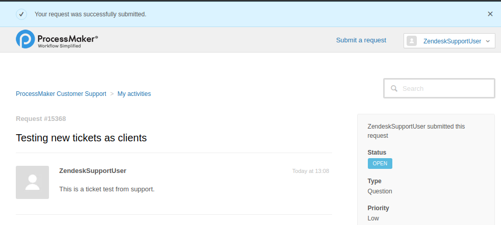
Search for Previously Reported Mantis Tickets
Follow these steps to search for previously reported Mantis system tickets:
Log on to the ProcessMaker Customer Support Portal.
-
Locate the Search requests field.
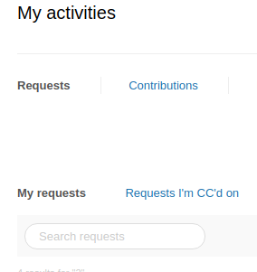
-
Perform a search in one of the following ways:
-
Ticket number: Enter the seven (7) digit number of your previously reported Mantis ticket, and then press
Enter.Note: If your Mantis ticket does not contain seven digits, enter zeroes (0) at the beginning of the ticket number. Example: 0017526.
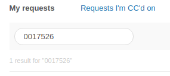
In the above example, 0017526 returns the following result.
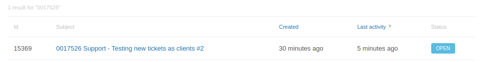
-
Search by keywords: Enter a keyword described in the previously reported Mantis ticket. Keywords are not case sensitive. However, you must enter the entire keyword and not only part of it. Example: DEV.
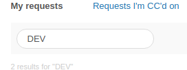
In the example above, DEV returns the following results.
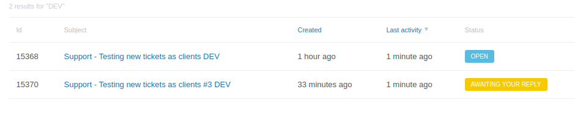
-
Filter Tickets by Status Type
Follow these steps to filter your reported tickets by status type:
Log on to the ProcessMaker Customer Support Portal.
-
Locate the Status drop-down menu.
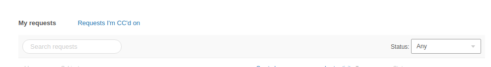
-
Select a status from which to filter your reported tickets.
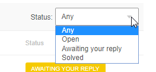